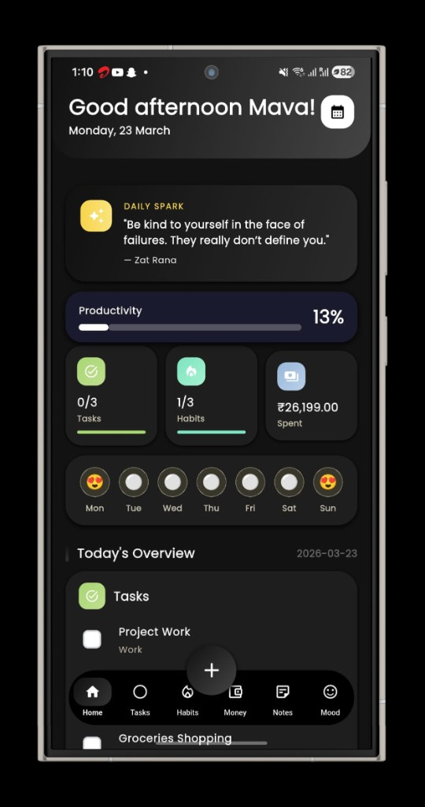
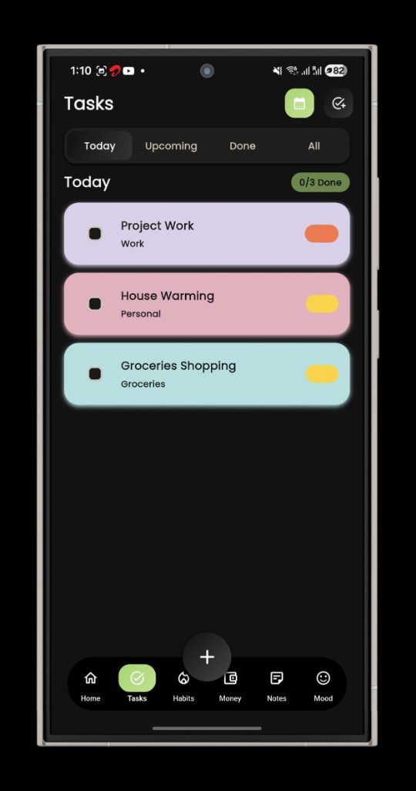
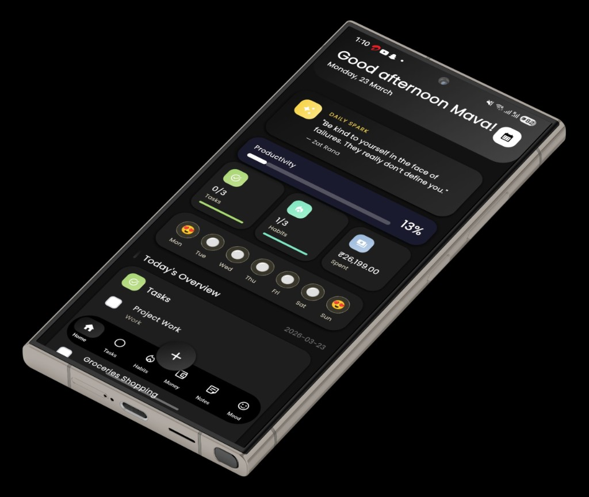
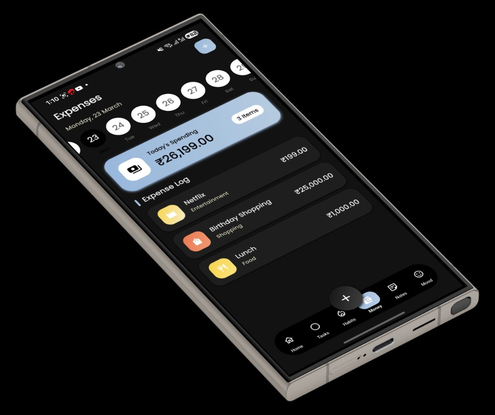
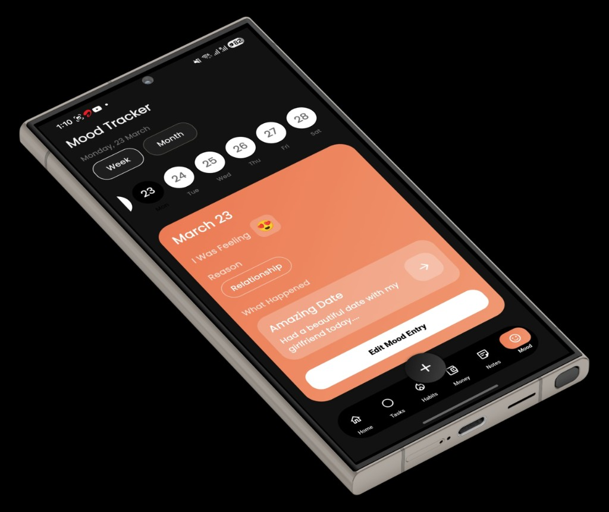
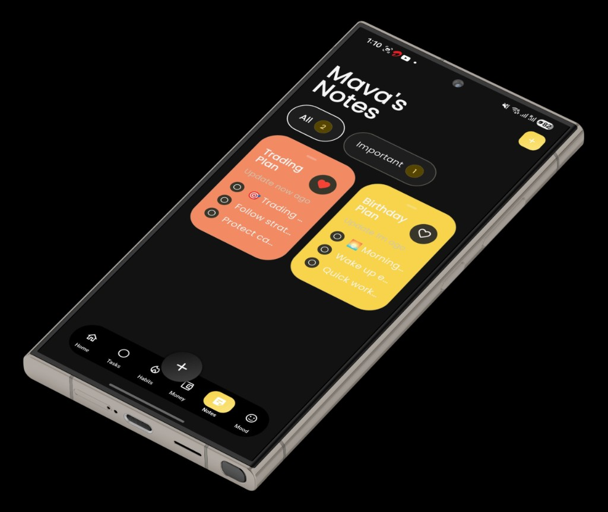

Home overview
Daily spark, productivity, tasks, habits, spending, and mood - all in one scroll.
Join thousands building better daily systems.
All-in-one app to track habits, expenses, mood, tasks, and notes - stay consistent, focused, and in control.

One dark, colourful dashboard - habits, money, mood, tasks, and notes together.
Daily spark, productivity, tasks, habits, spending, and mood - all in one scroll.

Colourful cards, Today / Upcoming / Done, and progress you can see at a glance.

Streak-friendly layout with mint accents and a clear daily rhythm.

Track spending with a bold summary card and a clean expense log.

Log how you feel and spot patterns week over week.

Capture ideas fast - coral, yellow, and dark panels that stay easy to scan.
Real habits, real numbers - built for quick daily check-ins.
Check-ins last month
2,000+
Logged by people using Nodal
Habits, expenses, mood, tasks, and notes share one interface - no app hopping.
Yes, it’s free to use. There are 0 ads.
On your own device - not on our cloud. You stay in control.
Right now, none. A future update may ask for notification permission only, if you want reminders.
Track what matters and improve at your own pace.